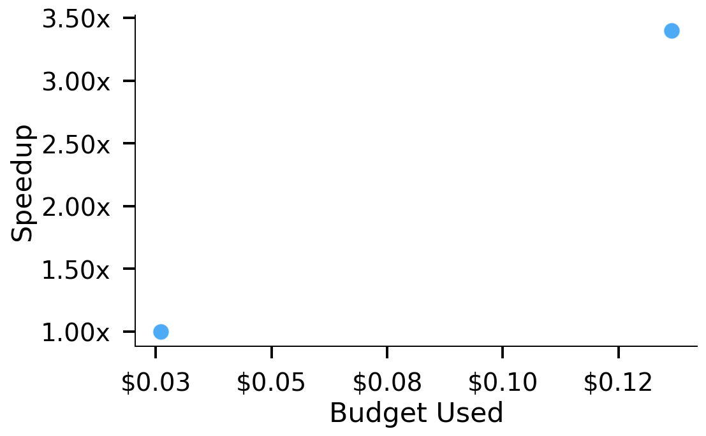
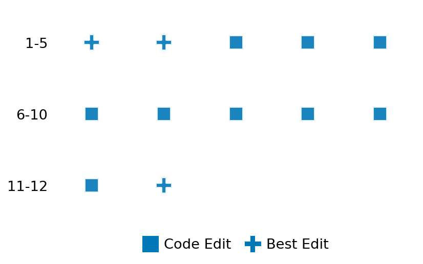

SETTING:
You're an autonomous programmer tasked with solving a specific problem. You are to use the commands defined below to accomplish this task. Every message you send incurs a cost—you will be informed of your usage and remaining budget by the system.
You will be evaluated based on the best-performing piece of code you produce, even if the final code doesn't work or compile (as long as it worked at some point and achieved a score, you will be eligible).
Apart from the default Python packages, you have access to the following additional packages:
- cryptography
- cvxpy
- cython
- dace
- dask
- diffrax
- ecos
- faiss-cpu
- hdbscan
- highspy
- jax
- networkx
- numba
- numpy
- ortools
- pandas
- pot
- psutil
- pulp
- pyomo
- python-sat
- pythran
- scikit-learn
- scipy
- sympy
- torch
YOUR TASK:
Your objective is to define a class named `Solver` in `solver.py` with a method:
```
class Solver:
def solve(self, problem, **kwargs) -> Any:
"""Your implementation goes here."""
...
```
IMPORTANT: Compilation time of your init function will not count towards your function's runtime.
This `solve` function will be the entrypoint called by the evaluation harness. Strive to align your class and method implementation as closely as possible with the desired performance criteria.
For each instance, your function can run for at most 10x the reference runtime for that instance. Strive to have your implementation run as fast as possible, while returning the same output as the reference function (for the same given input). Be creative and optimize your approach!
Your messages should include a short thought about what you should do, followed by a _SINGLE_ command. The command must be enclosed within ``` and ```, like so:
<Reasoning behind executing the command>
```
<command>
```
IMPORTANT: Each set of triple backticks (```) must always be on their own line, without any other words or anything else on that line.
Here are the commands available to you. Ensure you include one and only one of the following commands in each of your responses:
- `edit`: Replace a range of lines with new content in a file. This is how you can create files: if the file does not exist, it will be created. Here is an example:
```
edit
file: <file_name>
lines: <start_line>-<end_line>
---
<new_content>
---
```
The command will:
1. Delete the lines from <start_line> to <end_line> (inclusive)
2. Insert <new_content> starting at <start_line>
3. If both <start_line> and <end_line> are 0, <new_content> will be prepended to the file
Example:
edit
file: solver.py
lines: 5-7
---
def improved_function():
print("Optimized solution")
---
- `ls`: List all files in the current working directory.
- `view_file <file_name> [start_line]`: Display 100 lines of `<file_name>` starting from `start_line` (defaults to line 1).
- `revert`: Revert the code to the best-performing version thus far.
- `reference <string>`: Query the reference solver with a problem and receive its solution. If the problem's input is a list, this command would look like:
```
reference [1,2,3,4]
```
- `eval_input <string>`: Run your current solver implementation on the given input. This is the only command that shows stdout from your solver along with both solutions. Example:
```
eval_input [1,2,3,4]
```
- `eval`: Run evaluation on the current solution and report the results.
- `delete`: Delete a range of lines from a file using the format:
```
delete
file: <file_name>
lines: <start_line>-<end_line>
The command will delete the lines from <start_line> to <end_line> (inclusive)
Example:
delete
file: solver.py
lines: 5-10
```
- `profile <filename.py> <input>`: Profile your currently loaded solve method's performance on a given input. Shows the 25 most time-consuming lines. Requires specifying a python file (e.g., `solver.py`) for validation, though profiling runs on the current in-memory code.
Example:
```
profile solver.py [1, 2, 3]
```
- `profile_lines <filename.py> <line_number1, line_number2, ...> <input>`: Profiles the chosen lines of the currently loaded code on the given input. Requires specifying a python file for validation.
Example:
```
profile_lines solver.py 1,2,3 [1, 2, 3]
```
**TIPS:**
After each edit, a linter will automatically run to ensure code quality. If there are critical linter errors, your changes will not be applied, and you will receive the linter's error message. Typically, linter errors arise from issues like improper indentation—ensure your edits maintain proper code formatting.
**Cython Compilation:** Edits creating or modifying Cython (`.pyx`) files will automatically trigger a compilation attempt (requires a `setup.py`). You will be notified if compilation succeeds or fails. If it fails, the edit to the `.pyx` file will be automatically reverted.
If the code runs successfully without errors, the in-memory 'last known good code' will be updated to the new version. Following successful edits, you will receive a summary of your `solve` function's performance compared to the reference.
If you get stuck, try reverting your code and restarting your train of thought.
Do not put an if __name__ == "__main__": block in your code, as it will not be ran (only the solve function will).
Keep trying to better your code until you run out of money. Do not stop beforehand!
**GOALS:**
Your primary objective is to optimize the `solve` function to run as as fast as possible, while returning the optimal solution.
You will receive better scores the quicker your solution runs, and you will be penalized for exceeding the time limit or returning non-optimal solutions.
Below you find the description of the task you will have to solve. Read it carefully and understand what the problem is and what your solver should do.
**TASK DESCRIPTION:**
1D Burgers' Equation Solver Task:
This task involves solving the one-dimensional Burgers' equation, a fundamental nonlinear partial differential equation that combines both advection and diffusion. The equation is given by:
$\frac{\partial u}{\partial t} + u \frac{\partial u}{\partial x} = \nu \frac{\partial^2 u}{\partial x^2}$
Where:
- u(x,t) is the velocity field
- ν is the viscosity coefficient
- The term u∂u/∂x represents nonlinear advection (wave propagation)
- The term ν∂²u/∂x² represents diffusion (smoothing)
The problem is solved using the method of lines with an upwind scheme for the advection term and central differences for the diffusion term:
$\frac{du_i}{dt} = -u_i \frac{du}{dx}\bigg|_i + \nu \frac{u_{i+1} - 2u_i + u_{i-1}}{(\Delta x)^2}$
Where ∂u/∂x is computed using upwind differencing based on the sign of u to maintain numerical stability.
The system uses Dirichlet boundary conditions (u=0 at both ends) and an initial condition designed to develop shocks, using either a sine wave or carefully positioned Gaussian bumps with small random perturbations.
Input:
A dictionary with the following keys:
- `t0`: Initial time (float)
- `t1`: Final time (float, fixed at 0.5)
- `y0`: Initial velocity at each interior grid point (list of floats)
- `params`: Dictionary containing:
- `nu`: Viscosity coefficient (float, fixed at 0.005)
- `dx`: Grid spacing (float)
- `num_points`: Number of interior grid points (integer, scales as 20 * n)
- `x_grid`: Spatial coordinates of interior grid points (list of floats)
Example input:
```
{
"t0": 0.0,
"t1": 0.5,
"y0": [0.0, 0.3, 0.5, ..., -0.2], # Values at each grid point
"params": {
"nu": 0.005,
"dx": 0.0476,
"num_points": 80
},
"x_grid": [-0.95, -0.91, ..., 0.95] # Interior grid points
}
```
Output:
A list of floating-point numbers representing the solution u(x,t1) at each interior grid point.
Example output:
```
[0.0, 0.02, 0.08, ..., -0.04]
```
Category: differential_equation
Below is the reference implementation. Your function should run much quicker.
from typing import Any
import numpy as np
from scipy.integrate import solve_ivp
| 01: def _solve( problem: dict[str, np.ndarray | float], debug=True) -> Any:
| 02: y0 = np.array(problem["y0"])
| 03: t0, t1 = problem["t0"], problem["t1"]
| 04: params = problem["params"]
| 05:
| 06: def burgers_equation(t, u):
| 07: # Extract parameters
| 08: nu = params["nu"]
| 09: dx = params["dx"]
| 10:
| 11: # Apply method of lines: discretize spatial derivatives
| 12: # Pad array for boundary conditions (u=0 at boundaries)
| 13: u_padded = np.pad(u, 1, mode="constant", constant_values=0)
| 14:
| 15: # For Burgers' equation, we need to discretize:
| 16: # du/dt + u * du/dx = nu * d²u/dx²
| 17:
| 18: # First compute diffusion term (second derivative) using central difference
| 19: diffusion_term = (u_padded[2:] - 2 * u_padded[1:-1] + u_padded[:-2]) / (dx**2)
| 20:
| 21: # For the advection term (u * du/dx), use an upwind scheme for stability
| 22: # Implementation of a simple upwind scheme based on sign of u:
| 23: u_centered = u_padded[1:-1] # u at current point
| 24:
| 25: # Forward difference (for u < 0)
| 26: du_dx_forward = (u_padded[2:] - u_padded[1:-1]) / dx
| 27:
| 28: # Backward difference (for u > 0)
| 29: du_dx_backward = (u_padded[1:-1] - u_padded[:-2]) / dx
| 30:
| 31: # Choose appropriate differencing based on sign of u (upwind scheme)
| 32: advection_term = np.where(
| 33: u_centered >= 0,
| 34: u_centered * du_dx_backward, # Use backward difference when u ≥ 0
| 35: u_centered * du_dx_forward, # Use forward difference when u < 0
| 36: )
| 37:
| 38: # Combine terms: du/dt = -u*du/dx + nu*d²u/dx²
| 39: du_dt = -advection_term + nu * diffusion_term
| 40:
| 41: return du_dt
| 42:
| 43: # Set solver parameters
| 44: rtol = 1e-6
| 45: atol = 1e-6
| 46:
| 47: method = "RK45"
| 48: t_eval = np.linspace(t0, t1, 100) if debug else None
| 49:
| 50: sol = solve_ivp(
| 51: burgers_equation,
| 52: [t0, t1],
| 53: y0,
| 54: method=method,
| 55: rtol=rtol,
| 56: atol=atol,
| 57: t_eval=t_eval,
| 58: dense_output=debug,
| 59: )
| 60:
| 61: if not sol.success:
| 62:
| 63: return sol
| 64:
| 65:
| 66: def solve(self, problem: dict[str, np.ndarray | float]) -> dict[str, list[float]]:
| 67: sol = self._solve(problem, debug=False)
| 68:
| 69: # Extract final state
| 70: if sol.success:
| 71: return sol.y[:, -1].tolist() # Get final state
| 72: else:
| 73: raise RuntimeError(f"Solver failed: {sol.message}")
| 74:
This function will be used to check if your solution is valid for a given problem. If it returns False, it means the solution is invalid:
from typing import Any
import numpy as np
from scipy.integrate import solve_ivp
| 01: def is_solution( problem: dict[str, Any], solution: dict[str, list[float]]) -> bool:
| 02: if not all(k in problem for k in ["params", "y0", "t0", "t1"]):
| 03: logging.error("Problem dictionary missing required keys.")
| 04: return False
| 05:
| 06: proposed_list = solution
| 07:
| 08: try:
| 09: y0_arr = np.array(problem["y0"])
| 10: proposed_array = np.array(proposed_list, dtype=float)
| 11: except Exception:
| 12: logging.error("Could not convert 'y_final' or 'y0' to numpy arrays.")
| 13: return False
| 14:
| 15: if proposed_array.shape != y0_arr.shape:
| 16: logging.error(f"Output shape {proposed_array.shape} != input shape {y0_arr.shape}.")
| 17: return False
| 18: if not np.all(np.isfinite(proposed_array)):
| 19: logging.error("Proposed 'y_final' contains non-finite values.")
| 20: return False
| 21:
| 22: try:
| 23: ref_solution = solve(problem)
| 24: ref_array = np.array(ref_solution)
| 25: except Exception as e:
| 26: logging.error(f"Error computing reference solution: {e}")
| 27: return False
| 28:
| 29: if ref_array.shape != y0_arr.shape:
| 30: logging.error(f"Reference shape {ref_array.shape} mismatch input {y0_arr.shape}.")
| 31: return False
| 32: if not np.all(np.isfinite(ref_array)):
| 33: logging.error("Reference solution contains non-finite values.")
| 34: return False
| 35:
| 36: rtol, atol = 1e-5, 1e-8
| 37: if not np.allclose(proposed_array, ref_array, rtol=rtol, atol=atol):
| 38: abs_diff = np.max(np.abs(proposed_array - ref_array))
| 39: rel_diff = np.max(
| 40: np.abs((proposed_array - ref_array) / (atol + rtol * np.abs(ref_array)))
| 41: )
| 42: logging.error(
| 43: f"Solution verification failed: max abs err={abs_diff:.3g}, max rel err={rel_diff:.3g}"
| 44: )
| 45: return False
| 46:
| 47: return True
| 48:
 AlgoTuner Trajectory
AlgoTuner Trajectory
AlgoTune Task:
pde_burgers1d
Model:
Gemini 2.5 Pro
Speedup
3.434x
Total Budget
$1.00
Initial System Prompt
AlgoTune Task Description
1D Burgers' Equation Solver Task:
This task involves solving the one-dimensional Burgers' equation, a fundamental nonlinear partial differential equation that combines both advection and diffusion. The equation is given by:
$\frac{\partial u}{\partial t} + u \frac{\partial u}{\partial x} = \nu \frac{\partial^2 u}{\partial x^2}$
Where:
- u(x,t) is the velocity field
- ν is the viscosity coefficient
- The term u∂u/∂x represents nonlinear advection (wave propagation)
- The term ν∂²u/∂x² represents diffusion (smoothing)
The problem is solved using the method of lines with an upwind scheme for the advection term and central differences for the diffusion term:
$\frac{du_i}{dt} = -u_i \frac{du}{dx}\bigg|_i + \nu \frac{u_{i+1} - 2u_i + u_{i-1}}{(\Delta x)^2}$
Where ∂u/∂x is computed using upwind differencing based on the sign of u to maintain numerical stability.
The system uses Dirichlet boundary conditions (u=0 at both ends) and an initial condition designed to develop shocks, using either a sine wave or carefully positioned Gaussian bumps with small random perturbations.
Input:
A dictionary with the following keys:
- `t0`: Initial time (float)
- `t1`: Final time (float, fixed at 0.5)
- `y0`: Initial velocity at each interior grid point (list of floats)
- `params`: Dictionary containing:
- `nu`: Viscosity coefficient (float, fixed at 0.005)
- `dx`: Grid spacing (float)
- `num_points`: Number of interior grid points (integer, scales as 20 * n)
- `x_grid`: Spatial coordinates of interior grid points (list of floats)
Example input:
```
{
"t0": 0.0,
"t1": 0.5,
"y0": [0.0, 0.3, 0.5, ..., -0.2], # Values at each grid point
"params": {
"nu": 0.005,
"dx": 0.0476,
"num_points": 80
},
"x_grid": [-0.95, -0.91, ..., 0.95] # Interior grid points
}
```
Output:
A list of floating-point numbers representing the solution u(x,t1) at each interior grid point.
Example output:
```
[0.0, 0.02, 0.08, ..., -0.04]
```
Category: differential_equation
Reference Implementation
from typing import Any
import numpy as np
from scipy.integrate import solve_ivp
def _solve( problem: dict[str, np.ndarray | float], debug=True) -> Any:
y0 = np.array(problem["y0"])
t0, t1 = problem["t0"], problem["t1"]
params = problem["params"]
def burgers_equation(t, u):
# Extract parameters
nu = params["nu"]
dx = params["dx"]
# Apply method of lines: discretize spatial derivatives
# Pad array for boundary conditions (u=0 at boundaries)
u_padded = np.pad(u, 1, mode="constant", constant_values=0)
# For Burgers' equation, we need to discretize:
# du/dt + u * du/dx = nu * d²u/dx²
# First compute diffusion term (second derivative) using central difference
diffusion_term = (u_padded[2:] - 2 * u_padded[1:-1] + u_padded[:-2]) / (dx**2)
# For the advection term (u * du/dx), use an upwind scheme for stability
# Implementation of a simple upwind scheme based on sign of u:
u_centered = u_padded[1:-1] # u at current point
# Forward difference (for u < 0)
du_dx_forward = (u_padded[2:] - u_padded[1:-1]) / dx
# Backward difference (for u > 0)
du_dx_backward = (u_padded[1:-1] - u_padded[:-2]) / dx
# Choose appropriate differencing based on sign of u (upwind scheme)
advection_term = np.where(
u_centered >= 0,
u_centered * du_dx_backward, # Use backward difference when u ≥ 0
u_centered * du_dx_forward, # Use forward difference when u < 0
)
# Combine terms: du/dt = -u*du/dx + nu*d²u/dx²
du_dt = -advection_term + nu * diffusion_term
return du_dt
# Set solver parameters
rtol = 1e-6
atol = 1e-6
method = "RK45"
t_eval = np.linspace(t0, t1, 100) if debug else None
sol = solve_ivp(
burgers_equation,
[t0, t1],
y0,
method=method,
rtol=rtol,
atol=atol,
t_eval=t_eval,
dense_output=debug,
)
if not sol.success:
return sol
def solve(self, problem: dict[str, np.ndarray | float]) -> dict[str, list[float]]:
sol = self._solve(problem, debug=False)
# Extract final state
if sol.success:
return sol.y[:, -1].tolist() # Get final state
else:
raise RuntimeError(f"Solver failed: {sol.message}")Best AlgoTuner-Generated Code
solver.py
from typing import Any
import numpy as np
from scipy.integrate import solve_ivp
import numba
class Solver:
def solve(self, problem: dict, **kwargs) -> Any:
"""
Solves the 1D Burgers' equation using the method of lines.
The primary optimization is the Just-In-Time (JIT) compilation of the
right-hand-side (RHS) function using Numba. The ODE solver from SciPy
calls this RHS function many times. By compiling it to highly efficient
machine code, we eliminate the Python interpreter overhead for the most
computationally intensive part of the algorithm.
The Numba-jitted function uses an explicit loop over the grid points.
This pattern is very effectively optimized by Numba and avoids the
creation of temporary intermediate arrays that a pure NumPy vectorized
approach would use, further improving performance and memory usage.
"""
y0 = np.array(problem["y0"])
t0, t1 = problem["t0"], problem["t1"]
params = problem["params"]
nu = params["nu"]
dx = params["dx"]
# This function is defined inside `solve` so that it can close over
# the parameters `nu` and `dx` from the problem description.
# Numba handles this closure efficiently.
# `nopython=True` ensures we get maximum performance.
# `fastmath=True` allows for aggressive floating-point optimizations.
# `cache=True` caches the compiled code between runs.
@numba.jit(nopython=True, fastmath=True, cache=True)
def burgers_rhs_numba(t, u):
N = u.shape[0]
dudt = np.empty(N)
dx2 = dx * dx
# Handle the first grid point (i=0) with boundary condition u[-1]=0
u_center = u[0]
u_right = u[1]
diffusion = nu * (u_right - 2 * u_center + 0.0) / dx2
if u_center >= 0:
# Upwind scheme: information comes from the left
advection = u_center * (u_center - 0.0) / dx
else:
# Upwind scheme: information comes from the right
advection = u_center * (u_right - u_center) / dx
dudt[0] = diffusion - advection
# Loop over interior grid points
for i in range(1, N - 1):
u_left = u[i-1]
u_center = u[i]
u_right = u[i+1]
diffusion = nu * (u_right - 2 * u_center + u_left) / dx2
if u_center >= 0:
advection = u_center * (u_center - u_left) / dx
else:
advection = u_center * (u_right - u_center) / dx
dudt[i] = diffusion - advection
# Handle the last grid point (i=N-1) with boundary condition u[N]=0
u_left = u[N-2]
u_center = u[N-1]
diffusion = nu * (0.0 - 2 * u_center + u_left) / dx2
if u_center >= 0:
advection = u_center * (u_center - u_left) / dx
else:
advection = u_center * (0.0 - u_center) / dx
dudt[N-1] = diffusion - advection
return dudt
# Solve the ODE system using the JIT-compiled RHS function
sol = solve_ivp(
burgers_rhs_numba,
[t0, t1],
y0,
method="RK45",
rtol=1e-6,
atol=1e-6,
)
if not sol.success:
raise RuntimeError(f"Solver failed: {sol.message}")
return sol.y[:, -1].tolist()Speedup vs Budget Plot
Speedup vs Budget

Action Sequence
